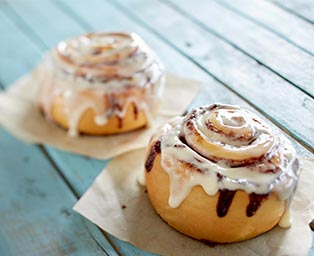

<!DOCTYPE html>
<html></html>
<head>
    <meta charset="UTF-8">
    <title>Classic Cinnabon Cinnamon Rolls</title>
</head>
<body>
    <h1>Cinnabon</h1>
    
</body>
    <p>Now you can make Cinnabon's world-famous cinnamon roll from 
        the comfort of you own home! These cinnamon rolls are made
        with a combination of warm dough, legendary Makara cinnamon,
        and signature cream cheese for a freshly baked, irresistible 
        sweet treat.</p>

<h3>Ingredients</h3>
        <h5>Dough</h5>
            <ul>
                <l1>1 cup warm milk (110 degrees F / 
                45 degrees C)
                </l1>
                <li>2 eggs, room temperature</li>
                <li> 1/3 cup margarine, melted</li>
                <li>4 1/2 cups bread flour</li>
                <li>1 teaspoon salt</li>
                <li>1/2 cup white sugar</li>

            </ul>
        <h5>Filling</h5>
            <ul>
                <li>1 cup brown sugar, packed</li>
                <li>2 1/2 tablespoons ground cinnamon</li>
                <li>1/3 cup butter, softened</li>
            </ul>
        
            <h5>Icing</h5>
                <ul>
                    <li>1 (3 ounce) package cream cheese, softened</li>
                    <li>1/4 cup butter, softened</li>
                    <li>1 1/2 cups confectioners'sugar</li>
                    <li>1/2 teaspoon vinilla</li>
                    <li>1/8 teaspoon salt</li>
                </ul>
</html>